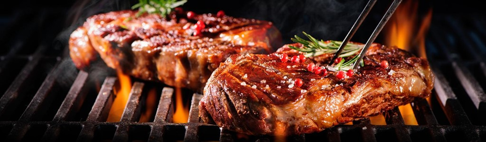
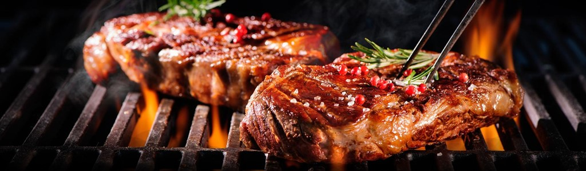

O que é Parrilla?
A parrilla é um estilo tradicional de churrasco argentino, onde a carne é
grelhada em uma grelha suspensa sobre brasas delenha.
É um método de cozimento que realça o sabor da carne, resultando
em textura suculenta e um delicioso aroma defumado.
A parrilla é uma técnica popular e apreciada por amantes de churrasco em
todo o mundo.